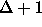

Supported by:
Nordic Academy for Advanced Study (NorFA),
City of Reykjavík,
and Ministry of Education of Iceland.
Location: The workshop will be held at the Oddi building on the university campus. It's a white building, shaped as an irregular, asymmetric polygon, placed low center on the campus map inside your folder. Hotel Gardur is placed to the left, marked as ``Student dormitory'' Hotel Loftleidir is down left, outside the map.
Registration desk: Registration will open at 8 am on Wednesday July 3. The registration desk will be open on Wednesday morning, during lunch hours, and sporadically in between. Feel free to ask us about sightseeing possibilities.
Proceedings: Additional copies may be purchased at the workshop for $40 (2700kr) (note the correction).
Lunch: Conference lunch is at the cafeteria on the first floor of the Taeknigardur building (marked on the campus map as ``Centre for Technical Innovation''). Go up from Oddi, cross Sudurgata street and head to a grey and green three-story building across the parking lot. Please bring your badge!
Reception: The City of Reykjavík, along with the Ministry of Education, hosts a reception at 6:30 pm on Wednesday in City Hall for SWAT participants and their accompanying persons. Head west from campus, across Hringbraut blvd, to the new building that stands into the city pond on the far end.
Banquet: The conference dinner will be held on Thursday at a historic site on the small island Videy just outside Reykjavík. Participant are encouraged to present homebrew entertainment or music afterwards. We depart from Hotel Gardur at 7:30 (notice the change) and Hotel Loftleidir five to ten minutes later.
Excursion: On Friday afternoon, we will head out of the city to see some of the unique nature in Iceland. We visit the original geyser Geysir and its constantly spewing brother; the ``golden falls'' Gullfoss; the fault and fissure separated lava fields at Thingvellir national park; and the geothermal active area of Nesjavellir. We hope to do some light mountain hiking, but the actual schedule will be decided on-line, depending on weather and mood. We bring with us a box meal, along with beer and beverages.
There will be an ``open air problem session'' during the excursion. Please contribute some open problems.
Extra tickets: If you would like an extra ticket for the banquet (for a student or a spouse) or for the excursion (for a spouse), please sign up early on Wednesday. The at-cost prices are $70 (4700kr) and $45 (3000kr), respectively.
Wednesday, July 3, 1996
Invited Lecture
Session 1: 9:50--10:40 am Chaired by Erik M. Schmidt.
Coffee Break 10:40--11:00 am
Session 2: 11:00--12:40 noon Chaired by Bengt Aspvall.
Lunch Break 12:40--2:00 pm
Session 3: 2:00--3:40 pm Chaired by Rolf Karlsson
Coffee Break 3:40--4:00 pm
Session 4: 4:00--6:05 pmChaired by Takao Nishizeki.
Reception: 7:00 pm.
Thursday, July 4, 1996
Invited Lecture
Session 5: 9:50--10:40 am Chaired by J.R. Sack.
Coffee Break 10:40--11:00 am
Session 6: 11:00--12:40 noon Chaired by Hjálmtýr Hafsteinsson

-Coloring. Pierre Kelsen (Max-Planck-Institut).
Lunch Break 12:40--2:00 pm
Session 7: 2:00--3:40 pm Chaired by Andrzej Lingas
Coffee Break 3:40--4:00 pm
Session 8: 4:00--6:05 pm Chaired by Susanne Albers
Business Meeting: 5:40 pm, Oddi
Conference Banquet: 7:00 pm, Videy
Friday, July 5, 1996
Invited Lecture
Session 9: 9:50--10:40 am Chaired by Ricardo Baeza-Yates
Coffee Break 10:40--11:00 am
Session 10: 11:00--12:40 noon Chaired by Svante Carlsson
Lunch Break 12:40--2:00 pm
Excursion and Open-Air Problem Session:
Depart: 2:00 pm
Return: Midnight
Organizing Committee:
Hjálmtýr Hafsteinsson and
Magnús M. Halldórsson (University of Iceland)
Program Committee:
Susanne Albers (Max-Planck-Institut für Informatik)
Bengt Aspvall (University of Bergen)
Ricardo Baeza-Yates (University of Chile)
Svante Carlsson (Luleå Technical University)
Magnús M. Halldórsson (University of Iceland)
Rolf Karlsson (co-chair, Lund University)
Andrzej Lingas (co-chair, Lund University)
Joe Mitchell (SUNY Stony Brook)
Takao Nishizeki (Tohoku University)
Pekka Orponen (University of Helsinki)
Jörg-Rüdiger Sack (Carleton University)
Erik M. Schmidt (University of Aarhus)
Eli Upfal (IBM Almaden)
Moti Yung (IBM Yorktown Heights)
SWAT Steering Committee:
Bengt Aspvall (University of Bergen)
Svante Carlsson (Luleå Technical University)
Hjálmtýr Hafsteinsson (University of Iceland)
Rolf Karlsson (Lund University)
Andrzej Lingas (Lund University)
Erik M. Schmidt (University of Aarhus)
Esko Ukkonen (University of Helsinki)
For further information about the workshop, check out the WWW page:
http://www.hi.is/swat96/or contact:
Magnús M. Halldórsson
Lofskeytastod (Old Telegraph Office)
University of Iceland
IS-107 Reykjavík, Iceland
Tel: 354--525-4773 (w), 565-7614 (h)
Fax: 354--552-8801
Email: mmh@rhi.hi.is